Шаг 1: подготавливаем гранат.
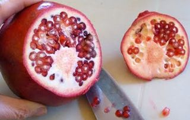
Гранат – очень вкусный и очень полезный фрукт! Но все мы прекрасно знаем, что с ним обычно не очень хочется возиться и грязнить свою одежду его соком, который может брызнуть в нашу сторону, когда мы пытаемся очистить этот ингредиент от кожуры. Поэтому, чтобы избежать таких вот нюансов, я расскажу, что можно сделать, чтобы сохранить все зернышки в целости и сохранности и получить от этого процесса даже удовольствие. Итак, для начала промываем гранат под проточной водой. Внимание: хоть этот способ и эффективный, но лучше избежать неожиданных брызг гранатового сока и одеть фартук. Срезаем ножом верхушку с хвостиком таким образом, чтобы на срезе были видны белые прожилки фрукта.
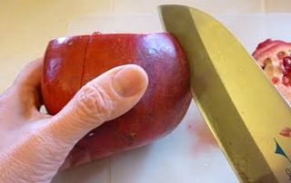
Затем аккуратно делаем надрезы с помощью того же острого инвентаря, задевая эти белые прожилки вдоль плода в сторону второй верхушки ингредиента.
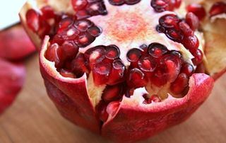
У нас с виду надрезы получаются, как «апельсиновые дольки».
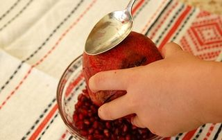
После этого переворачиваем фрукт надрезом вниз и начинаем стучать по кожуре со всех сторон столовой ложкой. Делать это лучше всего над пиалой с глубокими бортами, чтобы выпадающие из плода зерна попадали прямо в посуду. Внимание: не бойтесь сильно постукивать подручным инвентарем по гранату, так как зерна от этого не повредятся, а быстрее высвободятся из прожилок.
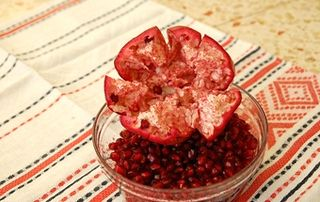
Вот и все! У нас получается целый красивый главный ингредиент салата и шкурка от него в виде цветка.
Шаг 2: подготавливаем сыр.
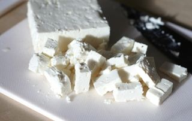
Итак, выкладываем сыр Фету на разделочную доску и нарезаем его с помощью ножа на небольшие кубики размером не больше 1,5 сантиметра. Сразу же после этого ингредиент аккуратно перекладываем в тарелку и откладываем в сторону. Внимание: для приготовления гранатового салата такой сыр подойдет весьма кстати, ведь он очень вкусный, нежный и с пикантным соленым привкусом. Не беспокойтесь о том, что сам по себе молочный продукт довольно нежный, как помадка. Для того чтобы он не крошился, а держал форму, аккуратно перекладываем его с помощью столовой ложки в отдельную посуду.
Шаг 3: подготавливаем салатные листья.
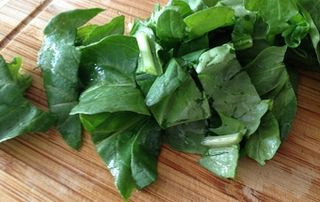
Промываем под проточной водой листья рукколы и после – выкладываем их на бумажные полотенца, чтобы с них стекла лишняя жидкость. Руккола очень интересная и своеобразная на вкус зелень для салата, поэтому добавляйте ее в блюдо по вкусу. На вкус эта зелень терпкая, немного горьковато-пряная и освежающая. Но какой она дает нашему организму заряд энергии и насыщение полезными витаминами и веществами. Например, в ее состав входят такие группы витаминов, как А, С, Е, В и К. Из веществ можно встретить такие, как фосфор, магний, кальций и много других. И, конечно же, ни для кого не секрет, что если постоянно добавлять в пищу этот салатный лист, то можно оздоровиться и защитить свой иммунитет от разных заболеваний, особенно в холодный период времени. После того, как компонент высохнет, выкладываем его на разделочную доску и по желанию измельчаем ножом его на более маленькие кусочки. Также можно порвать листья чистыми руками.
Шаг 4: подготавливаем помидоры.
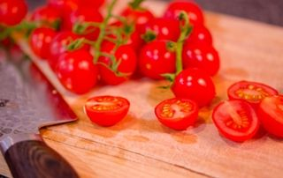
Какие вкусные, красивые и сладкие помидоры черри. В этом рецепте они играют немаловажную роль не только для вкуса, но и для эстетичного внешнего вида нашего салата. Итак, промываем ингредиент под проточной водой и выкладываем его на разделочную доску. С помощью ножа разрезаем овощ на две половинки и с каждой срезаем заднюю часть с хвостиком. После – перекладываем помидоры в чистую тарелку.
Шаг 5: подготавливаем свеклу.
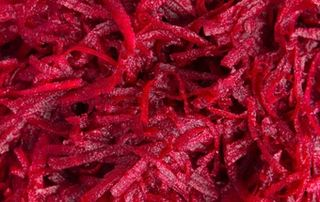
Свеклу тщательно промываем под проточной теплой водой. После – ножом очищаем ее от кожуры и затем вновь промываем под водой. Это необходимо сделать, для того, чтобы в блюде не попадалась земля и песок, так как чаще всего этот овощ предлагают не совсем в чистом виде. Затем с помощью крупной терки или подручным острым инвентарем измельчаем компонент на небольшие полосочки и сразу же перекладываем в свободную тарелку. Не волнуйтесь о том, что свекла будет сырой. В этом салате она будет давать интересный незабываемый вкус. Кроме этого этот овощ очень полезен для организма в сыром виде.
Шаг 6: готовим заправку.
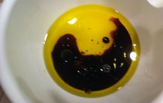
В пиалу с помощью столовой ложки выливаем бальзамический уксус и оливковое масло, а также добавляем по вкусу соль и черный молотый перец. Хорошо все перемешиваем до однородности. Внимание: количество ингредиентов, как и пропорции, могут меняться в зависимости от вашего вкуса. После того, как заправите блюдо этим соусом, обязательно попробуйте его на вкус. Если, по вашему мнению, какого-то жидкого компонента будет не хватать, просто долейте его в измельченные ингредиенты, определяя его количество «на глаз» и еще раз все хорошо перемешайте ложкой.
Шаг 7: готовим салат с гранатом.
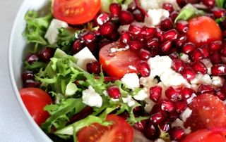
Выкладываем в глубокую миску все составляющие ингредиенты блюда, заливаем все соусом и аккуратно перемешиваем столовой ложкой.